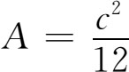
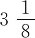

6．巴比伦的几何
几何在巴比伦人的心目中是不重要的。几何并不是他们一门独立的学科。关于划分土地或计算某项工程所需砖数之类的问题很易于化为代数问题。面积和体积的一些算法是按固定法则或公式给出的。不过，那些说明几何问题的图画得很粗，所用的公式也可能不正确。例如，在巴比伦人计算面积的问题里，我们分不清其中的三角形是否为直角三角形，也不知其四边形是否为正方形，因而不知其对有关图形所用的公式是否正确。不过，毕达哥拉斯定理中的关系，三角形的相似以及相似三角形对应边成比例的关系他们是知道的，他们似用

（其中c表圆周长）这个法则得出圆面积。在这个法则里，他们等于用3代替了π。不过，在他们给出正六边形及其外接圆周长之比时，其中的结果说明他们用
作为π值。在计算一些特定物理问题时，他们算出了一些体积，有些算对了，有些算得不对。除了计算一个给定的等腰三角形的外接圆半径之类这些特殊的实际知识外，巴比伦人的几何内容只是收集了一些计算简单平面图形面积和简单立体体积的法则，而平面图形中则包括正多边形。他们并不专为几何而研究几何，总是在解决实际问题时才去研究几何的。